Project 2: Fun with Filters and Frequencies
Overview
This project is about filtering images with 2D convolutions and thinking about images in terms of frequencies. In Part 1 I implement convolution from scratch and use derivative filters to find edges. In Part 2 I use Gaussian filters to separate an image into low frequencies (smooth, coarse structure) and high frequencies (edges and fine detail), and use that split to sharpen images, make hybrid images that change with viewing distance, and blend two images together without a visible seam.
Part 1.1: Convolutions from Scratch
A convolution builds a new image where every pixel is a weighted sum of the pixels around it in the original, and the grid of weights is called the kernel. To compute one output pixel I flip the kernel in both x and y, center it on that pixel, multiply each weight by the pixel under it, and add up the products.
I pad the image with zeros first, adding kh // 2 rows on the top and bottom and kw // 2 columns on each side for a kernel of size kh × kw, so the kernel can sit on the edge pixels and the output stays the same size as the input ("same" padding). I wrote two versions: the four loop version loops over every output pixel and every kernel entry, and the two loop version loops over the output pixels and replaces the two inner loops with one numpy operation that slices out the neighborhood, multiplies it by the flipped kernel, and sums.
def zero_pad(im, pad_h, pad_w):
h, w = im.shape
out = np.zeros((h + 2 * pad_h, w + 2 * pad_w))
out[pad_h:pad_h + h, pad_w:pad_w + w] = im
return out
def conv2d_four_loops(im, kernel):
h, w = im.shape
kh, kw = kernel.shape
flipped = kernel[::-1, ::-1] # flip in both x and y
padded = zero_pad(im, kh // 2, kw // 2)
out = np.zeros((h, w))
for i in range(h):
for j in range(w):
total = 0.0
for u in range(kh):
for v in range(kw):
total += padded[i + u, j + v] * flipped[u, v]
out[i, j] = total
return out
def conv2d_two_loops(im, kernel):
h, w = im.shape
kh, kw = kernel.shape
flipped = kernel[::-1, ::-1]
padded = zero_pad(im, kh // 2, kw // 2)
out = np.zeros((h, w))
for i in range(h):
for j in range(w):
out[i, j] = np.sum(padded[i:i + kh, j:j + kw] * flipped)
return out
I ran both on a grayscale photo of myself (960 × 1440) with three kernels: a 9 × 9 box filter where every weight is 1/81, so each output pixel is the average of its neighborhood, and the finite difference operators Dx = [1, 0, −1] and Dy = DxT. Both of my versions match scipy.signal.convolve2d with mode="same" on all three kernels (np.allclose is true).
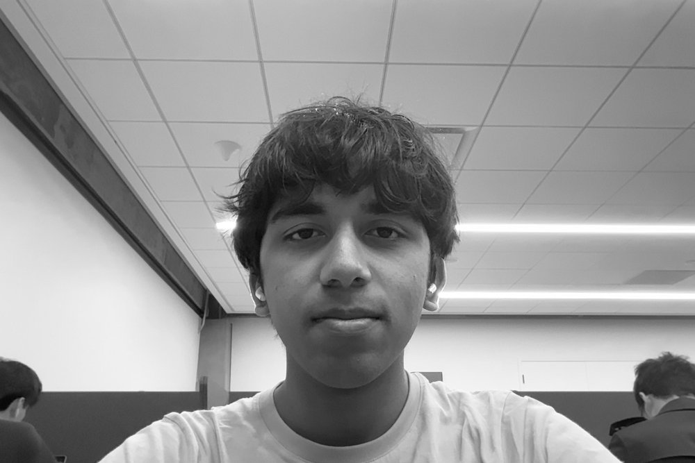
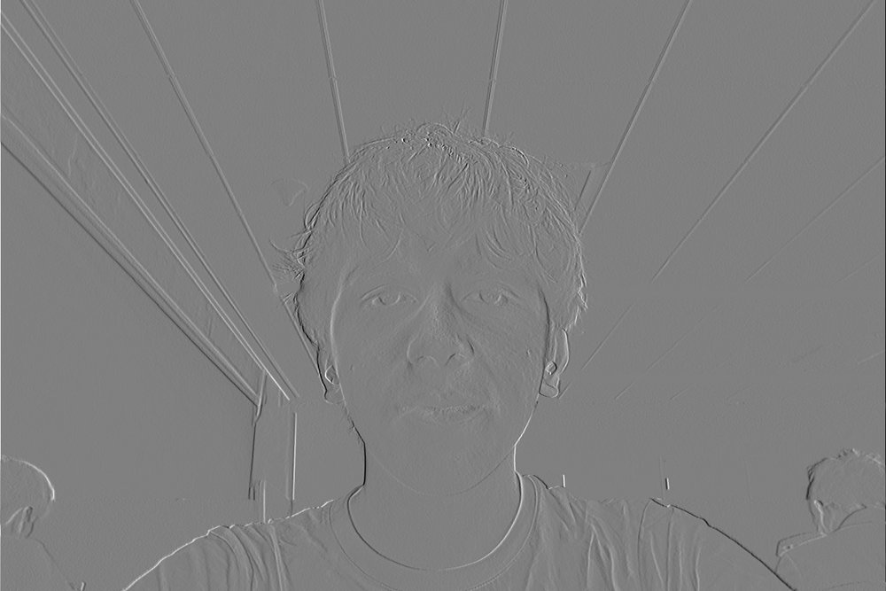
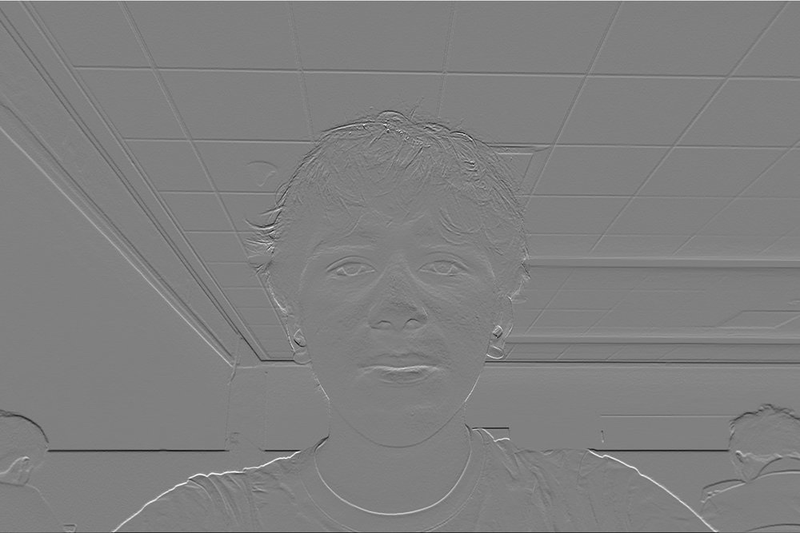
The box filter averages each neighborhood, which blurs the image, while Dx responds to brightness changing from left to right, so it picks out vertical edges like the sides of my face and the ceiling lines, and Dy picks out horizontal edges like the light fixtures and my shoulders. The derivative outputs are negative and positive, so I add 0.5 to display them with zero as mid gray.
| Kernel | Four loops | Two loops | scipy |
|---|---|---|---|
| 9 × 9 box | 15.52 s | 1.86 s | 84.70 ms |
| Dx | 0.77 s | 1.72 s | 8.32 ms |
| Dy | 0.84 s | 1.77 s | 14.19 ms |
Runtime
The four loop version does every multiplication in Python, so its cost grows with the kernel size: the box filter has 81 weights and takes about 20 times longer than Dx, which has 3. The two loop version makes one numpy call per pixel, so it takes about the same time for any kernel. That makes it much faster for the box filter but slower than four loops for the 3 entry filters, where the cost of the numpy call outweighs three multiplications. scipy runs entirely in compiled code and is 20 to 200 times faster than my versions.
Boundary handling
Since zero padding treats everything outside the image as black, the box filter darkens a band around the border, because part of each neighborhood there is padding: the top left pixel is 0.588 in the original and 0.183 after filtering. With Dx and Dy, the jump from the image to the black padding creates false edges along the border. scipy's default boundary is also zero fill, which is why the results match exactly. It also supports other options like boundary="symm", which mirrors the image at the border instead.
Part 1.2: Finite Difference Operator
I convolve the cameraman image with Dx and Dy to get the partial derivatives in x and y. Thinking of the image as a height map of brightness, dx is large where brightness changes going left to right and dy is large where it changes going down. Together they form the gradient vector at each pixel, and its length √(dx² + dy²) is the gradient magnitude, how strongly the brightness changes in any direction. To turn this into an edge image, I mark a pixel as an edge if its gradient magnitude is above a threshold.
The provided cameraman image has a pure white border (7 rows on top, 1 on the bottom, 1 column on the left, and 5 on the right). The jump from the photo to white is a strong false edge, so I crop the border off first, which leaves a 534 × 534 image. I also use boundary="symm" here so the edge of the image is not treated as an edge.
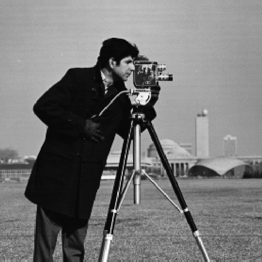
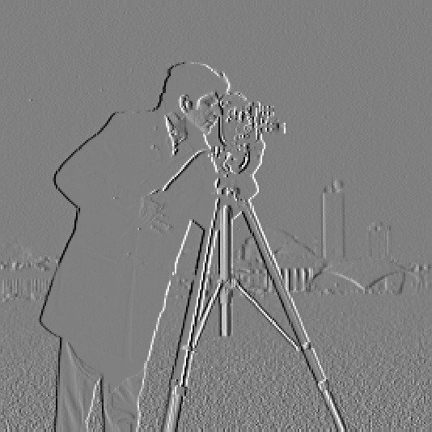
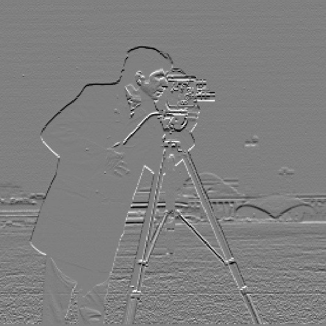
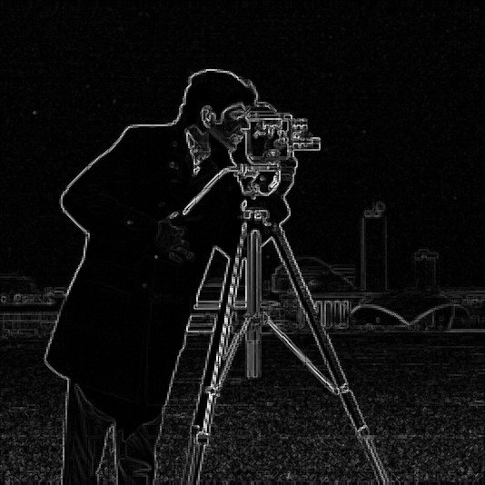
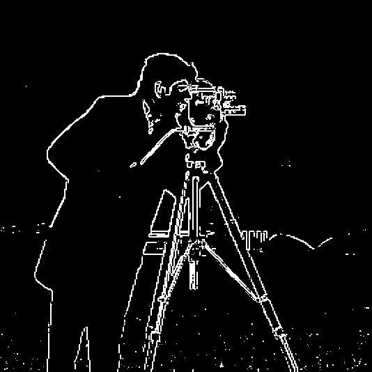
I picked the threshold by trying several values: at 0.2 the grass in the bottom half still produces a lot of speckles, and at 0.3 the grass is clean but more of the faint background buildings disappear. I chose 0.25 as the tradeoff: the man, the camera, and the tripod are fully outlined and most of the grass noise is gone, at the cost of some of the faintest background edges and a few remaining specks in the grass.
Part 1.3: Derivative of Gaussian (DoG) Filter
The finite difference results are noisy because a derivative reacts to any change between neighboring pixels, including the texture of the grass, so I smooth the image first with a Gaussian filter. I build the 2D Gaussian by taking a 1D Gaussian from cv2.getGaussianKernel and computing its outer product with itself, using σ = 2 and a kernel size of 6σ + 1 = 13 to cover three standard deviations on each side. I blur the cameraman image with it and repeat Part 1.2 on the blurred image.

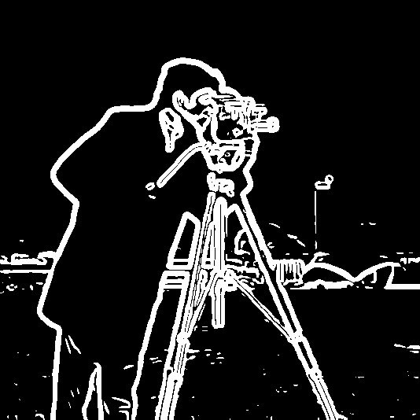
Compared to Part 1.2, the grass noise is almost entirely gone and the edges are smoother, thicker, and more continuous. The gradient values are also much smaller (the maximum drops from about 0.91 to about 0.30), because the blur spreads each sharp step over several pixels, so the threshold has to be lower: 0.05 here instead of 0.25. The tradeoff is that the blur removes fine detail, so the edges are less precisely located.
Since convolution is associative, blurring and then differentiating is the same as convolving once with a derivative of Gaussian filter: (image ∗ G) ∗ Dx = image ∗ (G ∗ Dx). I build the DoG filters by convolving the Gaussian with Dx and Dy (with full padding, so the filters are 13 × 15 and 15 × 13 and nothing gets cut off). Each one looks like a bright blob next to a dark blob, a smoothed version of [1, 0, −1].
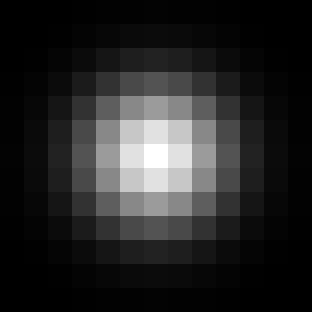
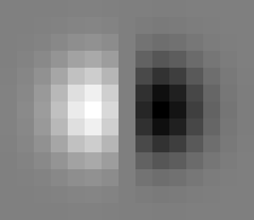
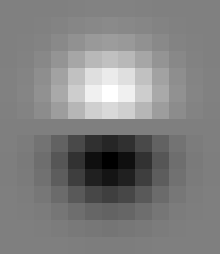
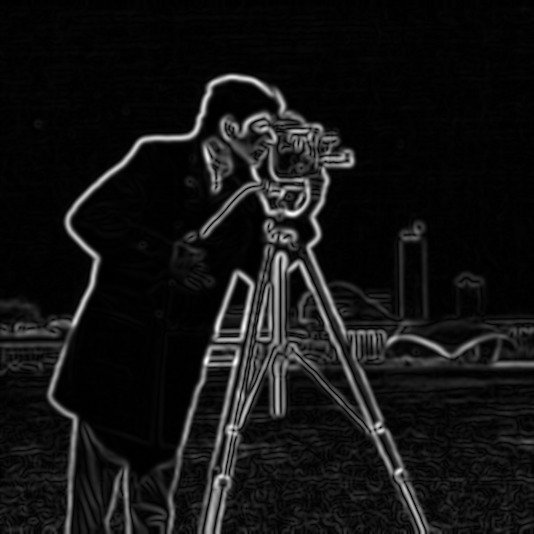

The two methods give the same result: the largest difference between the gradient magnitudes is 9.8 × 10−16, which is floating point rounding, and the two binarized edge images are identical.
Part 2.1: Image Sharpening
A Gaussian blur is a low pass filter: it keeps the smooth, slowly changing part of an image and removes fine detail. Subtracting the blurred image from the original leaves only what the blur removed, which is the high frequencies. Adding some of those high frequencies back on top of the original makes the image look sharper:
- blurred = image ∗ G
- high = image − blurred
- sharpened = image + α · high
Substituting gives image ∗ ((1 + α) · e − α · G), where e is the unit impulse (a filter with 1 in the center and 0 everywhere else, which leaves an image unchanged). That combined filter is the unsharp mask filter, so the whole operation is one convolution. Its weights sum to 1, so flat regions stay the same and only edges change: the dark side of an edge gets darker and the bright side gets brighter. I use a 13 × 13 Gaussian with σ = 2 and clip the result to [0, 1], since sharpening can overshoot at edges.
Taj Mahal
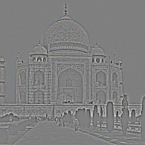
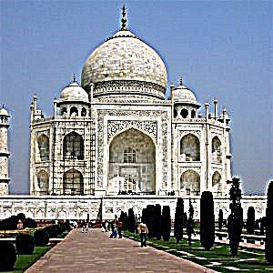
Golden Gate Bridge
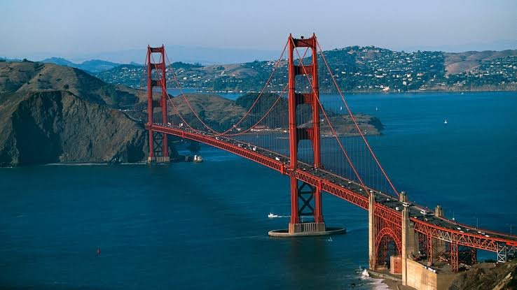
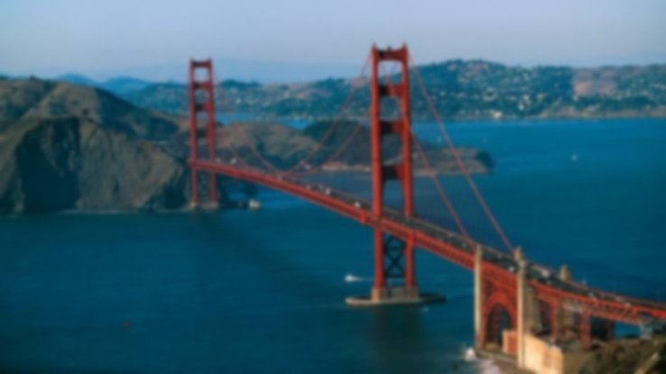
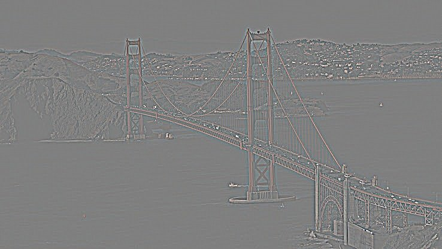
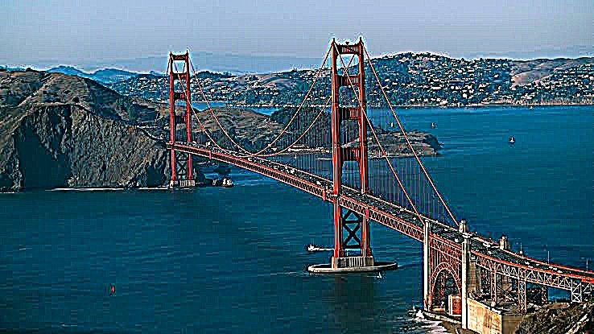
As α increases the edges get crisper and the fine texture gets stronger. Around α = 1 to 2 the images look sharper without looking processed. By α = 4 there are visible halos along edges and the noise gets amplified too, like the grain in the Taj Mahal's sky, because sharpening boosts every high frequency, not just the useful ones.
Evaluation: blur a sharp image, then sharpen it again
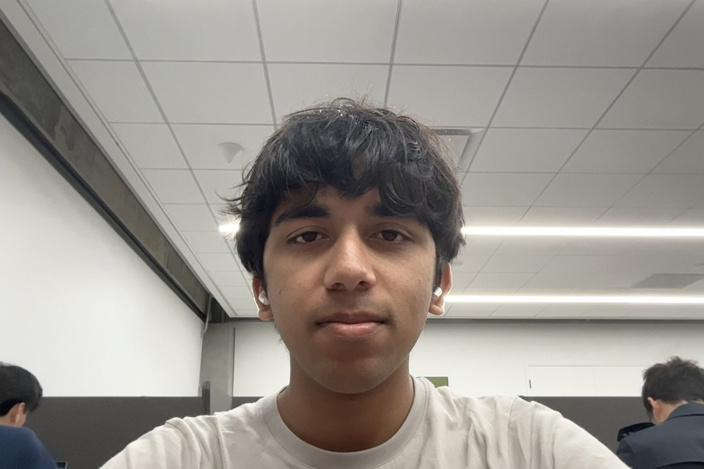
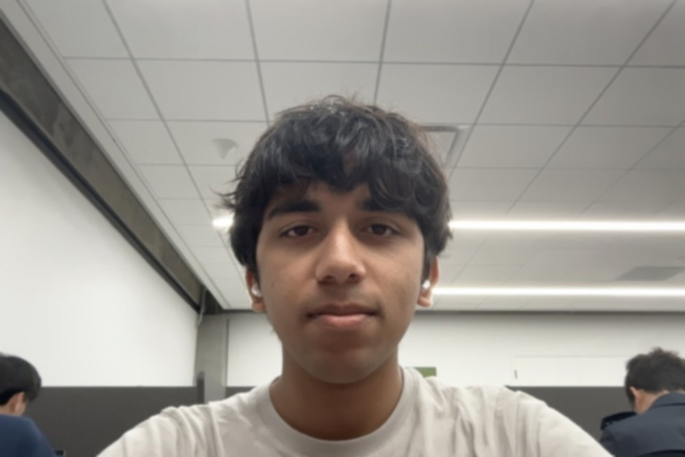
I blurred a sharp photo with the same Gaussian and then sharpened the result with α = 2. The resharpened image is closer to the original: its mean squared error drops from 0.000288 to 0.000134, and edges like my face and the ceiling lines look crisp again. Fine detail like individual strands of hair does not come back, because the blur removed that information and sharpening can only amplify what is left, so sharpening makes an image look sharper without actually undoing the blur.
Part 2.2: Hybrid Images
Up close, our eyes see fine detail, but from far away only the coarse, low frequency structure is visible. A hybrid image uses this by combining the low frequencies of one image with the high frequencies of another, so the high frequency image is seen up close and the low frequency image is seen from far away.
- low pass: blur with a Gaussian of size σ1. I apply a 1D Gaussian vertically and then horizontally, which gives the same result as the 2D kernel from Part 1.3 but is much faster for the large sigmas hybrids need.
- high pass: the image minus its Gaussian blur with σ2, which is the impulse filter minus the Gaussian.
- hybrid: low pass of the far image plus high pass of the near image, clipped to [0, 1].
Before combining them, I align the two images with the provided alignment code using two corresponding points clicked on each image (the eyes for faces), which matches their center, scale, and rotation so their features overlap. The provided code rotates the first image to match the tilt of the second, so I then rotate both images by the same angle to make the eye line level, and crop off the black corners that the rotation and padding create.
A Gaussian with standard deviation σ cuts amplitude in half at about 0.19 / σ cycles per pixel, so σ sets the cutoff frequency. I chose the sigmas for each pair by trying several values and comparing the result at full size and at a small size, which simulates viewing from far away.
Derek and Nutmeg (full process)
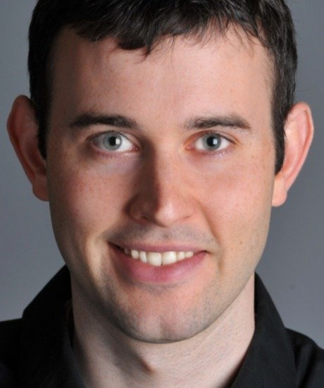
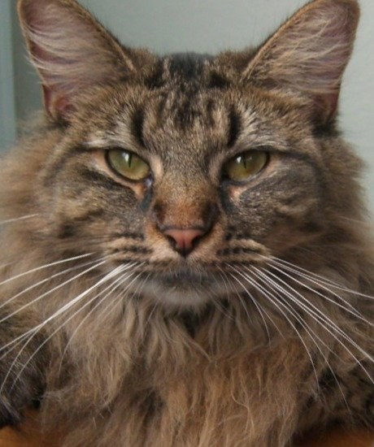
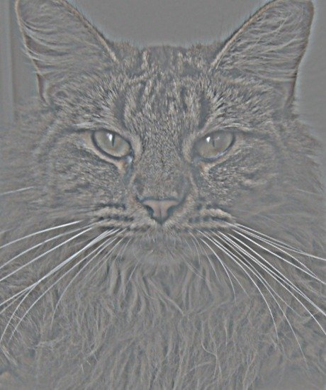
Nutmeg's head is tilted about 28°, so aligning the eyes tilted Derek to match, and leveling both afterward makes both faces upright. The log magnitude of the Fourier transform shows what each step keeps, where the center of each plot is the lowest frequency and frequencies get higher toward the edges.
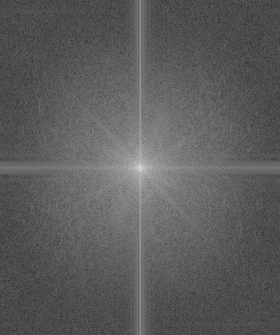
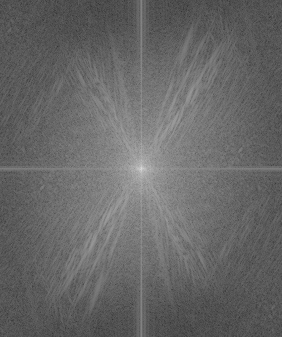
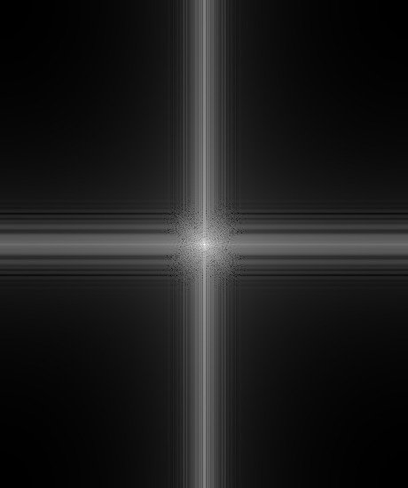
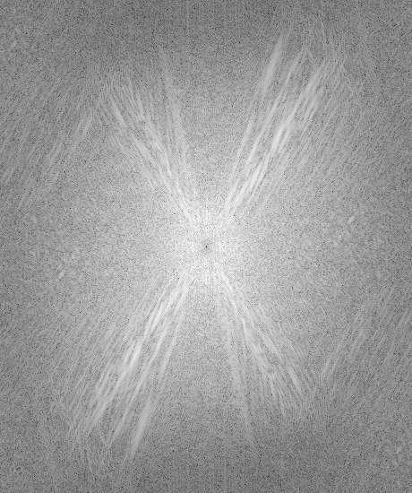
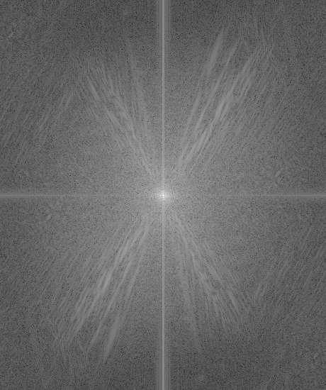
The low pass keeps only a bright region in the center and everything farther out goes dark. The high pass is the opposite, with a dark spot in the center. The hybrid has the center of Derek's spectrum and the outer part of Nutmeg's. I clip the log values at −5 before displaying them, because the high pass image averages to zero, so its center value is close to 0 and its log is around −26, which would wash out the rest of the plot.
I chose σ = 5 for both images, which puts the cutoff at about 0.04 cycles per pixel, so the low pass keeps structure coarser than about 27 pixels per cycle and the high pass keeps detail finer than that. With larger sigmas the cat's features started to show from far away too, while with σ = 5 Derek is clearly recognizable from far away and the cat's whiskers, fur, and ears appear over his face up close.
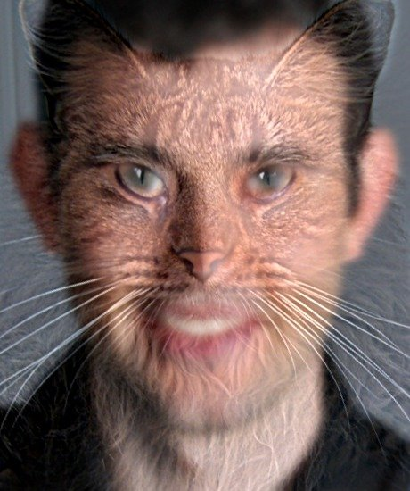
Moon and pizza
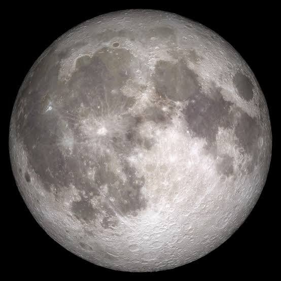
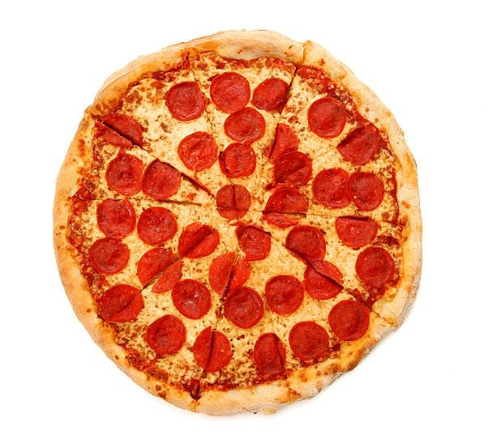
I aligned these using the left and right edges of each circle, which shrinks the moon by about 12% to match the pizza's width. The pizza needed a much smaller σ2 than the cat: its pepperoni edges are so strong that with larger values the pepperoni pattern still showed from far away. With σ2 = 2 only the fine detail is kept, which is still enough to read as pizza up close.
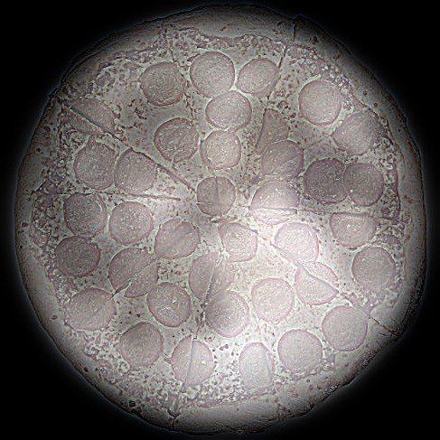
My friend and a lion
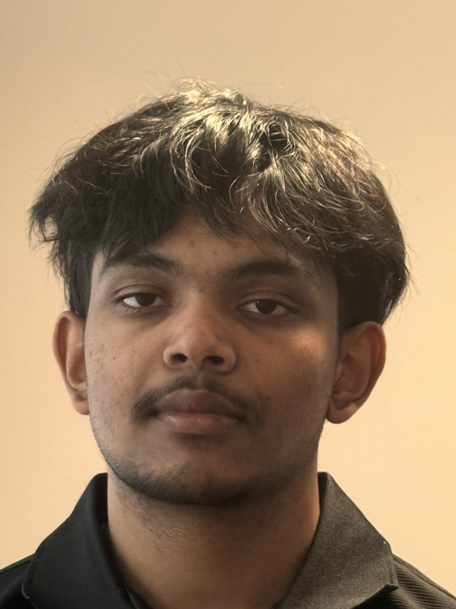
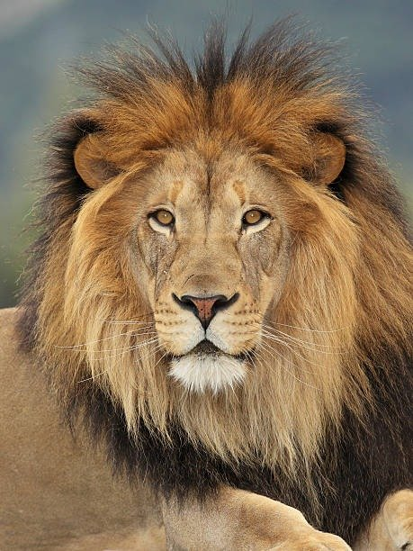
I aligned these on the eyes and leveled them, which also lines up the lion's mane with my friend's hair. Like the pizza, the lion's fur and whiskers are strong high frequency detail, so it needed a small σ2 to stay out of the far view. From far away my friend is clear, and up close the lion's eyes, nose, and fur show over the face.
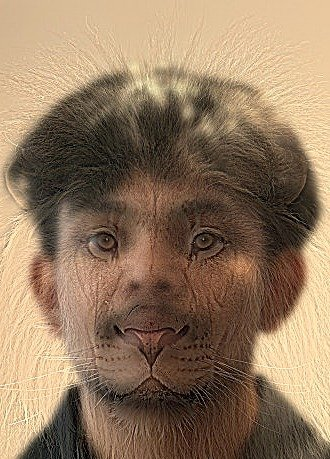
Part 2.3: Gaussian and Laplacian Stacks
A Gaussian stack is like a Gaussian pyramid without the downsampling: level 0 is the original image, and each level is the previous one blurred more, so every level stays full size. In a pyramid each level is half the size, so the same blur covers twice as much of the picture. To imitate that, I double the blur at each level: σ = 2, 4, 8, 16, and 32 between consecutive levels, for 6 levels total.
Each level of the Laplacian stack is the difference between two neighboring Gaussian levels, which is the band of detail that one blur step removed, and the last level is the blurriest Gaussian level, which holds the low frequency leftover. Adding up all the Laplacian levels gives back the original exactly, because the differences cancel in a chain, and I checked this for both images. The Laplacian levels before the last one are mostly near zero with positive and negative values, so I stretch each of them to [0, 1] for display.
Apple

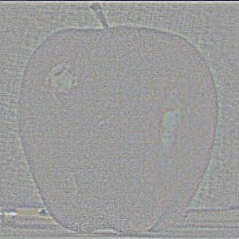
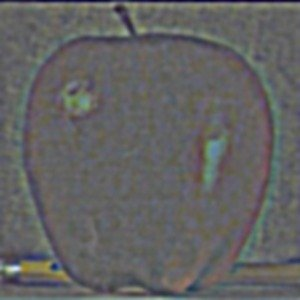
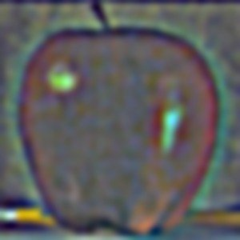
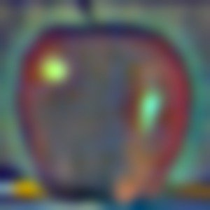
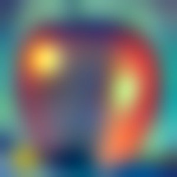
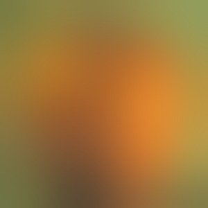
Orange
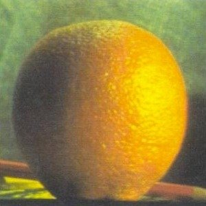
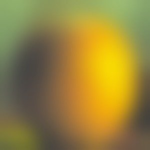
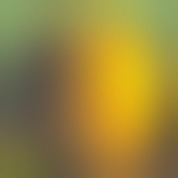
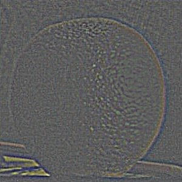
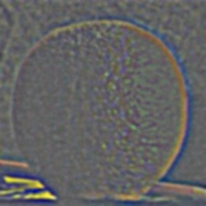
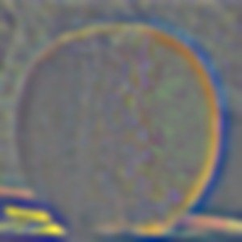
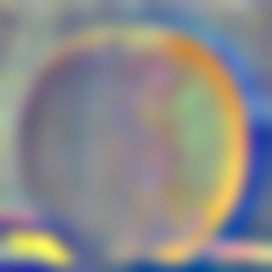
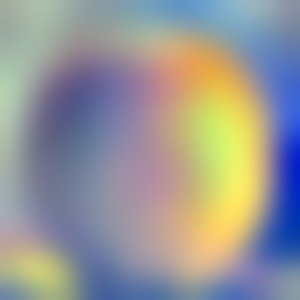

Recreating Figure 3.42
To blend the apple and orange I use a mask that is 1 on the left half and 0 on the right, and build a Gaussian stack of the mask too, so it goes from a hard edge at level 0 to a very soft one at level 5. At each level, the apple's Laplacian level is weighted by the mask and the orange's by 1 minus the mask. The first three rows show levels 0, 2, and 4: the masked apple, the masked orange, and their sum. The last row adds up all the levels, and the bottom right image is the blended oraple. I use 6 levels so that level 4 is still a band of detail like in the book's figure, because with only 5 levels, level 4 would be the last level, which holds the leftover low frequencies instead of a band.
Part 2.4: Multiresolution Blending
Pasting two images together with a hard mask leaves a visible seam, and blurring the mask once does not fix it: a narrow blur still shows the seam, and a wide one makes fine details from both images ghost over each other. Multiresolution blending solves this by blending each frequency band separately with its own version of the mask. My blend function does the same thing as the Figure 3.42 recreation:
- build the Laplacian stacks of both images and the Gaussian stack of the mask
- at each level, add the first image's band times the mask and the second image's band times 1 minus the mask
- add up all the levels and clip to [0, 1]
At level 0 the mask is still sharp, so fine detail switches between the images over a narrow strip, and at level 5 it is very soft, so the coarse colors fade across a wide band, which hides the seam without ghosting. I use the same 6 levels and σ = 2 as in Part 2.3.
Oraple
The naive paste has a sharp vertical line where the two fruits meet, while in the blend the colors and textures fade into each other, and the blend matches the last panel of my Figure 3.42 recreation exactly.
Half my friend, half a lion (straight seam)
I used the aligned images from the friend and lion hybrid, where the alignment puts the midpoint between the eyes at the same spot in both, so I put the vertical seam there to run down the middle of both faces.
Crescent moon made of pizza (irregular mask)
I used the aligned moon and pizza from Part 2.2 with a mask made of the moon's disk minus the same disk shifted 110 pixels to the right, which leaves a crescent. At first the pizza's white background bled through the very blurred mask at the coarse levels and left a white glow around the crescent, so I set everything outside the moon's disk in the pizza image to black to match the night sky around the moon.
San Francisco through Sather Gate (irregular mask)
I cropped the photo of Sather Gate so the gate fills the frame, then built a mask for the opening of the central arch: a flat ellipse that matches the curve under the lettering, joined to a rectangle that fills the opening down to the ground. For the second image I pasted the skyline over the opening in a copy of the gate photo, larger than the arch so its edges are outside the region the blur reaches. Outside the mask both images are the same, so the blend only changes the arch, and the skyline looks like it is seen through the gate.
Lion face on my friend (irregular mask)
The mask is an ellipse covering my friend's face from the hairline to the chin, with the lion inside the ellipse and my friend outside.
Banana in the San Francisco sky (irregular mask)
I cut the banana out of its photo by keeping the strongly yellow pixels, shrank it, and placed it in the sky. Since the banana is small I used 4 levels and σ = 1 here, because the larger blur from my usual settings spread its yellow into the sky as a halo.
Blending process for the pizza crescent
This figure shows every level of the blend for my favorite result in the same layout as Figure 3.42: the pizza's Laplacian level weighted by the crescent mask, the moon's weighted by 1 minus the mask, and their sum, with the last row adding up all the levels.
What I Learned
The most important thing I learned is that most of this project comes down to treating an image as a sum of frequency bands. Sharpening boosts the high band, a hybrid image takes the low band of one image and the high band of another, and multiresolution blending switches between two images at a different width for each band. The Gaussian filter is what separates those bands, which is why it shows up in almost every part of the project, from edge detection to sharpening, hybrids, and the stacks.